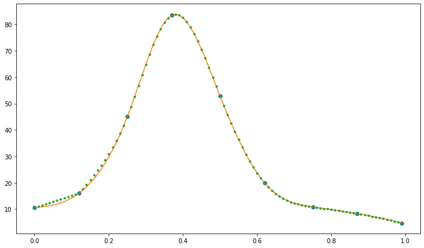

---
redirect_from:
  - "/week6/3-spline-fit"
interact_link: content/week6/3_spline_fit.ipynb
kernel_name: compclass
kernel_path: content/week6
has_widgets: false
title: |-
  Spline Fit
pagenum: 21
prev_page:
  url: /week6/3_fitting.html
next_page:
  url: /week7/1_pandas.html
suffix: .ipynb
search: 

comment: "***PROGRAMMATICALLY GENERATED, DO NOT EDIT. SEE ORIGINAL FILES IN /content***"
---

    <main class="jupyter-page">
    <div id="page-info"><div id="page-title">Spline Fit</div>
</div>
    <div class="jb_cell">

<div class="cell border-box-sizing code_cell rendered">
<div class="input">

<div class="inner_cell">
    <div class="input_area">
<div class=" highlight hl-ipython3"><pre><span></span><span class="sd">&quot;&quot;&quot; From &quot;COMPUTATIONAL PHYSICS&quot;, 3rd Ed, Enlarged Python eTextBook  </span>
<span class="sd">    by RH Landau, MJ Paez, and CC Bordeianu</span>
<span class="sd">    Copyright Wiley-VCH Verlag GmbH &amp; Co. KGaA, Berlin;  Copyright R Landau,</span>
<span class="sd">    Oregon State Unv, MJ Paez, Univ Antioquia, C Bordeianu, Univ Bucharest, 2015.</span>
<span class="sd">    Support by National Science Foundation&quot;&quot;&quot;</span>

<span class="c1"># SplineInteract.py  Spline fit</span>

<span class="kn">import</span> <span class="nn">matplotlib.pyplot</span> <span class="k">as</span> <span class="nn">plt</span>
</pre></div>

    </div>
</div>
</div>

</div>
</div>

<div class="jb_cell">

<div class="cell border-box-sizing code_cell rendered">
<div class="input">

<div class="inner_cell">
    <div class="input_area">
<div class=" highlight hl-ipython3"><pre><span></span><span class="kn">import</span> <span class="nn">numpy</span> <span class="k">as</span> <span class="nn">np</span>
</pre></div>

    </div>
</div>
</div>

</div>
</div>

<div class="jb_cell">

<div class="cell border-box-sizing code_cell rendered">
<div class="input">

<div class="inner_cell">
    <div class="input_area">
<div class=" highlight hl-ipython3"><pre><span></span><span class="n">x</span> <span class="o">=</span> <span class="n">np</span><span class="o">.</span><span class="n">array</span><span class="p">([</span><span class="mf">0.0</span><span class="p">,</span> <span class="mf">0.12</span><span class="p">,</span> <span class="mf">0.25</span><span class="p">,</span> <span class="mf">0.37</span><span class="p">,</span> <span class="mf">0.5</span><span class="p">,</span> <span class="mf">0.62</span><span class="p">,</span> <span class="mf">0.75</span><span class="p">,</span> <span class="mf">0.87</span><span class="p">,</span> <span class="mf">0.99</span><span class="p">])</span>  <span class="c1"># input</span>
<span class="n">y</span> <span class="o">=</span> <span class="n">np</span><span class="o">.</span><span class="n">array</span><span class="p">([</span><span class="mf">10.6</span><span class="p">,</span> <span class="mf">16.0</span><span class="p">,</span> <span class="mf">45.0</span><span class="p">,</span> <span class="mf">83.5</span><span class="p">,</span> <span class="mf">52.8</span><span class="p">,</span> <span class="mf">19.9</span><span class="p">,</span> <span class="mf">10.8</span><span class="p">,</span> <span class="mf">8.25</span><span class="p">,</span> <span class="mf">4.7</span><span class="p">])</span>
<span class="n">n</span> <span class="o">=</span> <span class="mi">9</span>
</pre></div>

    </div>
</div>
</div>

</div>
</div>

<div class="jb_cell">

<div class="cell border-box-sizing code_cell rendered">
<div class="input">

<div class="inner_cell">
    <div class="input_area">
<div class=" highlight hl-ipython3"><pre><span></span><span class="c1"># Initialize</span>
<span class="n">y2</span> <span class="o">=</span> <span class="n">np</span><span class="o">.</span><span class="n">zeros_like</span><span class="p">(</span><span class="n">y</span><span class="p">)</span>
<span class="n">u</span> <span class="o">=</span> <span class="n">np</span><span class="o">.</span><span class="n">zeros_like</span><span class="p">(</span><span class="n">y</span><span class="p">)</span>

<span class="n">Nfit</span> <span class="o">=</span> <span class="mi">100</span>  <span class="c1"># Original algorithm did Nfit + 1 points instead</span>

<span class="n">Xfit</span> <span class="o">=</span> <span class="n">np</span><span class="o">.</span><span class="n">zeros</span><span class="p">((</span><span class="n">Nfit</span><span class="p">),</span> <span class="nb">float</span><span class="p">)</span>
<span class="n">Yfit</span> <span class="o">=</span> <span class="n">np</span><span class="o">.</span><span class="n">zeros</span><span class="p">((</span><span class="n">Nfit</span><span class="p">),</span> <span class="nb">float</span><span class="p">)</span>

<span class="n">yp1</span> <span class="o">=</span> <span class="p">(</span>
    <span class="p">(</span><span class="n">y</span><span class="p">[</span><span class="mi">1</span><span class="p">]</span> <span class="o">-</span> <span class="n">y</span><span class="p">[</span><span class="mi">0</span><span class="p">])</span> <span class="o">/</span> <span class="p">(</span><span class="n">x</span><span class="p">[</span><span class="mi">1</span><span class="p">]</span> <span class="o">-</span> <span class="n">x</span><span class="p">[</span><span class="mi">0</span><span class="p">])</span>
    <span class="o">-</span> <span class="p">(</span><span class="n">y</span><span class="p">[</span><span class="mi">2</span><span class="p">]</span> <span class="o">-</span> <span class="n">y</span><span class="p">[</span><span class="mi">1</span><span class="p">])</span> <span class="o">/</span> <span class="p">(</span><span class="n">x</span><span class="p">[</span><span class="mi">2</span><span class="p">]</span> <span class="o">-</span> <span class="n">x</span><span class="p">[</span><span class="mi">1</span><span class="p">])</span>
    <span class="o">+</span> <span class="p">(</span><span class="n">y</span><span class="p">[</span><span class="mi">2</span><span class="p">]</span> <span class="o">-</span> <span class="n">y</span><span class="p">[</span><span class="mi">0</span><span class="p">])</span> <span class="o">/</span> <span class="p">(</span><span class="n">x</span><span class="p">[</span><span class="mi">2</span><span class="p">]</span> <span class="o">-</span> <span class="n">x</span><span class="p">[</span><span class="mi">0</span><span class="p">])</span>
<span class="p">)</span>

<span class="n">ypn</span> <span class="o">=</span> <span class="p">(</span>
    <span class="p">(</span><span class="n">y</span><span class="p">[</span><span class="o">-</span><span class="mi">1</span><span class="p">]</span> <span class="o">-</span> <span class="n">y</span><span class="p">[</span><span class="o">-</span><span class="mi">2</span><span class="p">])</span> <span class="o">/</span> <span class="p">(</span><span class="n">x</span><span class="p">[</span><span class="o">-</span><span class="mi">1</span><span class="p">]</span> <span class="o">-</span> <span class="n">x</span><span class="p">[</span><span class="o">-</span><span class="mi">2</span><span class="p">])</span>
    <span class="o">-</span> <span class="p">(</span><span class="n">y</span><span class="p">[</span><span class="o">-</span><span class="mi">2</span><span class="p">]</span> <span class="o">-</span> <span class="n">y</span><span class="p">[</span><span class="o">-</span><span class="mi">3</span><span class="p">])</span> <span class="o">/</span> <span class="p">(</span><span class="n">x</span><span class="p">[</span><span class="o">-</span><span class="mi">2</span><span class="p">]</span> <span class="o">-</span> <span class="n">x</span><span class="p">[</span><span class="o">-</span><span class="mi">3</span><span class="p">])</span>
    <span class="o">+</span> <span class="p">(</span><span class="n">y</span><span class="p">[</span><span class="o">-</span><span class="mi">1</span><span class="p">]</span> <span class="o">-</span> <span class="n">y</span><span class="p">[</span><span class="o">-</span><span class="mi">3</span><span class="p">])</span> <span class="o">/</span> <span class="p">(</span><span class="n">x</span><span class="p">[</span><span class="o">-</span><span class="mi">1</span><span class="p">]</span> <span class="o">-</span> <span class="n">x</span><span class="p">[</span><span class="o">-</span><span class="mi">3</span><span class="p">])</span>
<span class="p">)</span>

<span class="k">if</span> <span class="n">yp1</span> <span class="o">&gt;</span> <span class="mf">0.99e30</span><span class="p">:</span>
    <span class="n">y2</span><span class="p">[</span><span class="mi">0</span><span class="p">]</span> <span class="o">=</span> <span class="mf">0.0</span>
    <span class="n">u</span><span class="p">[</span><span class="mi">0</span><span class="p">]</span> <span class="o">=</span> <span class="mf">0.0</span>

<span class="k">else</span><span class="p">:</span>
    <span class="n">y2</span><span class="p">[</span><span class="mi">0</span><span class="p">]</span> <span class="o">=</span> <span class="o">-</span><span class="mf">0.5</span>
    <span class="n">u</span><span class="p">[</span><span class="mi">0</span><span class="p">]</span> <span class="o">=</span> <span class="mi">3</span> <span class="o">/</span> <span class="p">(</span><span class="n">x</span><span class="p">[</span><span class="mi">1</span><span class="p">]</span> <span class="o">-</span> <span class="n">x</span><span class="p">[</span><span class="mi">0</span><span class="p">])</span> <span class="o">*</span> <span class="p">((</span><span class="n">y</span><span class="p">[</span><span class="mi">1</span><span class="p">]</span> <span class="o">-</span> <span class="n">y</span><span class="p">[</span><span class="mi">0</span><span class="p">])</span> <span class="o">/</span> <span class="p">(</span><span class="n">x</span><span class="p">[</span><span class="mi">1</span><span class="p">]</span> <span class="o">-</span> <span class="n">x</span><span class="p">[</span><span class="mi">0</span><span class="p">])</span> <span class="o">-</span> <span class="n">yp1</span><span class="p">)</span>

<span class="k">for</span> <span class="n">i</span> <span class="ow">in</span> <span class="nb">range</span><span class="p">(</span><span class="mi">1</span><span class="p">,</span> <span class="n">n</span> <span class="o">-</span> <span class="mi">1</span><span class="p">):</span>  <span class="c1"># Decomp loop</span>
    <span class="n">sig</span> <span class="o">=</span> <span class="p">(</span><span class="n">x</span><span class="p">[</span><span class="n">i</span><span class="p">]</span> <span class="o">-</span> <span class="n">x</span><span class="p">[</span><span class="n">i</span> <span class="o">-</span> <span class="mi">1</span><span class="p">])</span> <span class="o">/</span> <span class="p">(</span><span class="n">x</span><span class="p">[</span><span class="n">i</span> <span class="o">+</span> <span class="mi">1</span><span class="p">]</span> <span class="o">-</span> <span class="n">x</span><span class="p">[</span><span class="n">i</span> <span class="o">-</span> <span class="mi">1</span><span class="p">])</span>
    <span class="n">p</span> <span class="o">=</span> <span class="n">sig</span> <span class="o">*</span> <span class="n">y2</span><span class="p">[</span><span class="n">i</span> <span class="o">-</span> <span class="mi">1</span><span class="p">]</span> <span class="o">+</span> <span class="mf">2.0</span>
    <span class="n">y2</span><span class="p">[</span><span class="n">i</span><span class="p">]</span> <span class="o">=</span> <span class="p">(</span><span class="n">sig</span> <span class="o">-</span> <span class="mf">1.0</span><span class="p">)</span> <span class="o">/</span> <span class="n">p</span>
    <span class="n">u</span><span class="p">[</span><span class="n">i</span><span class="p">]</span> <span class="o">=</span> <span class="p">(</span><span class="n">y</span><span class="p">[</span><span class="n">i</span> <span class="o">+</span> <span class="mi">1</span><span class="p">]</span> <span class="o">-</span> <span class="n">y</span><span class="p">[</span><span class="n">i</span><span class="p">])</span> <span class="o">/</span> <span class="p">(</span><span class="n">x</span><span class="p">[</span><span class="n">i</span> <span class="o">+</span> <span class="mi">1</span><span class="p">]</span> <span class="o">-</span> <span class="n">x</span><span class="p">[</span><span class="n">i</span><span class="p">])</span> <span class="o">-</span> <span class="p">(</span><span class="n">y</span><span class="p">[</span><span class="n">i</span><span class="p">]</span> <span class="o">-</span> <span class="n">y</span><span class="p">[</span><span class="n">i</span> <span class="o">-</span> <span class="mi">1</span><span class="p">])</span> <span class="o">/</span> <span class="p">(</span><span class="n">x</span><span class="p">[</span><span class="n">i</span><span class="p">]</span> <span class="o">-</span> <span class="n">x</span><span class="p">[</span><span class="n">i</span> <span class="o">-</span> <span class="mi">1</span><span class="p">])</span>

    <span class="n">u</span><span class="p">[</span><span class="n">i</span><span class="p">]</span> <span class="o">=</span> <span class="p">(</span><span class="mf">6.0</span> <span class="o">*</span> <span class="n">u</span><span class="p">[</span><span class="n">i</span><span class="p">]</span> <span class="o">/</span> <span class="p">(</span><span class="n">x</span><span class="p">[</span><span class="n">i</span> <span class="o">+</span> <span class="mi">1</span><span class="p">]</span> <span class="o">-</span> <span class="n">x</span><span class="p">[</span><span class="n">i</span> <span class="o">-</span> <span class="mi">1</span><span class="p">])</span> <span class="o">-</span> <span class="n">sig</span> <span class="o">*</span> <span class="n">u</span><span class="p">[</span><span class="n">i</span> <span class="o">-</span> <span class="mi">1</span><span class="p">])</span> <span class="o">/</span> <span class="n">p</span>

<span class="k">if</span> <span class="n">ypn</span> <span class="o">&gt;</span> <span class="mf">0.99e30</span><span class="p">:</span>  <span class="c1"># Test for natural</span>
    <span class="n">qn</span> <span class="o">=</span> <span class="n">un</span> <span class="o">=</span> <span class="mf">0.0</span>
<span class="k">else</span><span class="p">:</span>
    <span class="n">qn</span> <span class="o">=</span> <span class="mf">0.5</span>
    <span class="n">un</span> <span class="o">=</span> <span class="mi">3</span> <span class="o">/</span> <span class="p">(</span><span class="n">x</span><span class="p">[</span><span class="o">-</span><span class="mi">1</span><span class="p">]</span> <span class="o">-</span> <span class="n">x</span><span class="p">[</span><span class="o">-</span><span class="mi">2</span><span class="p">])</span> <span class="o">*</span> <span class="p">(</span><span class="n">ypn</span> <span class="o">-</span> <span class="p">(</span><span class="n">y</span><span class="p">[</span><span class="o">-</span><span class="mi">1</span><span class="p">]</span> <span class="o">-</span> <span class="n">y</span><span class="p">[</span><span class="o">-</span><span class="mi">2</span><span class="p">])</span> <span class="o">/</span> <span class="p">(</span><span class="n">x</span><span class="p">[</span><span class="o">-</span><span class="mi">1</span><span class="p">]</span> <span class="o">-</span> <span class="n">x</span><span class="p">[</span><span class="o">-</span><span class="mi">2</span><span class="p">]))</span>

<span class="n">y2</span><span class="p">[</span><span class="o">-</span><span class="mi">1</span><span class="p">]</span> <span class="o">=</span> <span class="p">(</span><span class="n">un</span> <span class="o">-</span> <span class="n">qn</span> <span class="o">*</span> <span class="n">u</span><span class="p">[</span><span class="o">-</span><span class="mi">2</span><span class="p">])</span> <span class="o">/</span> <span class="p">(</span><span class="n">qn</span> <span class="o">*</span> <span class="n">y2</span><span class="p">[</span><span class="o">-</span><span class="mi">2</span><span class="p">]</span> <span class="o">+</span> <span class="mi">1</span><span class="p">)</span>

<span class="k">for</span> <span class="n">k</span> <span class="ow">in</span> <span class="nb">range</span><span class="p">(</span><span class="n">n</span> <span class="o">-</span> <span class="mi">2</span><span class="p">,</span> <span class="mi">1</span><span class="p">,</span> <span class="o">-</span><span class="mi">1</span><span class="p">):</span>
    <span class="n">y2</span><span class="p">[</span><span class="n">k</span><span class="p">]</span> <span class="o">=</span> <span class="n">y2</span><span class="p">[</span><span class="n">k</span><span class="p">]</span> <span class="o">*</span> <span class="n">y2</span><span class="p">[</span><span class="n">k</span> <span class="o">+</span> <span class="mi">1</span><span class="p">]</span> <span class="o">+</span> <span class="n">u</span><span class="p">[</span><span class="n">k</span><span class="p">]</span>

<span class="k">for</span> <span class="n">i</span> <span class="ow">in</span> <span class="nb">range</span><span class="p">(</span><span class="n">Nfit</span><span class="p">):</span>  <span class="c1"># Begin fit</span>
    <span class="n">xout</span> <span class="o">=</span> <span class="n">x</span><span class="p">[</span><span class="mi">0</span><span class="p">]</span> <span class="o">+</span> <span class="p">(</span><span class="n">x</span><span class="p">[</span><span class="o">-</span><span class="mi">1</span><span class="p">]</span> <span class="o">-</span> <span class="n">x</span><span class="p">[</span><span class="mi">0</span><span class="p">])</span> <span class="o">*</span> <span class="n">i</span> <span class="o">/</span> <span class="p">(</span><span class="n">Nfit</span> <span class="o">-</span> <span class="mi">1</span><span class="p">)</span>
    <span class="n">klo</span> <span class="o">=</span> <span class="mi">0</span>  <span class="c1"># Bisection algor</span>
    <span class="n">khi</span> <span class="o">=</span> <span class="n">n</span> <span class="o">-</span> <span class="mi">1</span>
    <span class="k">while</span> <span class="n">khi</span> <span class="o">-</span> <span class="n">klo</span> <span class="o">&gt;</span> <span class="mi">1</span><span class="p">:</span>
        <span class="n">k</span> <span class="o">=</span> <span class="n">khi</span> <span class="o">+</span> <span class="n">klo</span> <span class="o">&gt;&gt;</span> <span class="mi">1</span>
        <span class="k">if</span> <span class="n">x</span><span class="p">[</span><span class="n">k</span><span class="p">]</span> <span class="o">&gt;</span> <span class="n">xout</span><span class="p">:</span>
            <span class="n">khi</span> <span class="o">=</span> <span class="n">k</span>
        <span class="k">else</span><span class="p">:</span>
            <span class="n">klo</span> <span class="o">=</span> <span class="n">k</span>

    <span class="n">h</span> <span class="o">=</span> <span class="n">x</span><span class="p">[</span><span class="n">khi</span><span class="p">]</span> <span class="o">-</span> <span class="n">x</span><span class="p">[</span><span class="n">klo</span><span class="p">]</span>

    <span class="k">if</span> <span class="n">x</span><span class="p">[</span><span class="n">k</span><span class="p">]</span> <span class="o">&gt;</span> <span class="n">xout</span><span class="p">:</span>
        <span class="n">khi</span> <span class="o">=</span> <span class="n">k</span>
    <span class="k">else</span><span class="p">:</span>
        <span class="n">klo</span> <span class="o">=</span> <span class="n">k</span>

    <span class="n">h</span> <span class="o">=</span> <span class="n">x</span><span class="p">[</span><span class="n">khi</span><span class="p">]</span> <span class="o">-</span> <span class="n">x</span><span class="p">[</span><span class="n">klo</span><span class="p">]</span>
    <span class="n">a</span> <span class="o">=</span> <span class="p">(</span><span class="n">x</span><span class="p">[</span><span class="n">khi</span><span class="p">]</span> <span class="o">-</span> <span class="n">xout</span><span class="p">)</span> <span class="o">/</span> <span class="n">h</span>
    <span class="n">b</span> <span class="o">=</span> <span class="p">(</span><span class="n">xout</span> <span class="o">-</span> <span class="n">x</span><span class="p">[</span><span class="n">klo</span><span class="p">])</span> <span class="o">/</span> <span class="n">h</span>
    <span class="n">yout</span> <span class="o">=</span> <span class="p">(</span>
        <span class="n">a</span> <span class="o">*</span> <span class="n">y</span><span class="p">[</span><span class="n">klo</span><span class="p">]</span>
        <span class="o">+</span> <span class="n">b</span> <span class="o">*</span> <span class="n">y</span><span class="p">[</span><span class="n">khi</span><span class="p">]</span>
        <span class="o">+</span> <span class="p">((</span><span class="n">a</span> <span class="o">*</span> <span class="n">a</span> <span class="o">*</span> <span class="n">a</span> <span class="o">-</span> <span class="n">a</span><span class="p">)</span> <span class="o">*</span> <span class="n">y2</span><span class="p">[</span><span class="n">klo</span><span class="p">]</span> <span class="o">+</span> <span class="p">(</span><span class="n">b</span> <span class="o">*</span> <span class="n">b</span> <span class="o">*</span> <span class="n">b</span> <span class="o">-</span> <span class="n">b</span><span class="p">)</span> <span class="o">*</span> <span class="n">y2</span><span class="p">[</span><span class="n">khi</span><span class="p">])</span> <span class="o">*</span> <span class="n">h</span> <span class="o">*</span> <span class="n">h</span> <span class="o">/</span> <span class="mi">6</span>
    <span class="p">)</span>

    <span class="n">Xfit</span><span class="p">[</span><span class="n">i</span><span class="p">]</span> <span class="o">=</span> <span class="n">xout</span>
    <span class="n">Yfit</span><span class="p">[</span><span class="n">i</span><span class="p">]</span> <span class="o">=</span> <span class="n">yout</span>
</pre></div>

    </div>
</div>
</div>

</div>
</div>

<div class="jb_cell">

<div class="cell border-box-sizing code_cell rendered">
<div class="input">

<div class="inner_cell">
    <div class="input_area">
<div class=" highlight hl-ipython3"><pre><span></span><span class="kn">from</span> <span class="nn">scipy.interpolate</span> <span class="kn">import</span> <span class="n">CubicSpline</span>
</pre></div>

    </div>
</div>
</div>

</div>
</div>

<div class="jb_cell">

<div class="cell border-box-sizing code_cell rendered">
<div class="input">

<div class="inner_cell">
    <div class="input_area">
<div class=" highlight hl-ipython3"><pre><span></span><span class="n">plt</span><span class="o">.</span><span class="n">figure</span><span class="p">(</span><span class="n">figsize</span><span class="o">=</span><span class="p">(</span><span class="mi">12</span><span class="p">,</span> <span class="mi">7</span><span class="p">))</span>
<span class="n">plt</span><span class="o">.</span><span class="n">plot</span><span class="p">(</span><span class="n">x</span><span class="p">,</span> <span class="n">y</span><span class="p">,</span> <span class="s2">&quot;o&quot;</span><span class="p">)</span>
<span class="n">plt</span><span class="o">.</span><span class="n">plot</span><span class="p">(</span><span class="n">Xfit</span><span class="p">,</span> <span class="n">CubicSpline</span><span class="p">(</span><span class="n">x</span><span class="p">,</span> <span class="n">y</span><span class="p">)(</span><span class="n">Xfit</span><span class="p">),</span> <span class="s2">&quot;-&quot;</span><span class="p">)</span>
<span class="n">plt</span><span class="o">.</span><span class="n">plot</span><span class="p">(</span><span class="n">Xfit</span><span class="p">,</span> <span class="n">Yfit</span><span class="p">,</span> <span class="s2">&quot;.&quot;</span><span class="p">)</span>
<span class="n">plt</span><span class="o">.</span><span class="n">show</span><span class="p">()</span>
</pre></div>

    </div>
</div>
</div>

<div class="output_wrapper">
<div class="output">

<div class="jb_output_wrapper }}">
<div class="output_area">


<div class="output_png output_subarea ">

</div>

</div>
</div>
</div>
</div>

</div>
</div>

 


    </main>
    